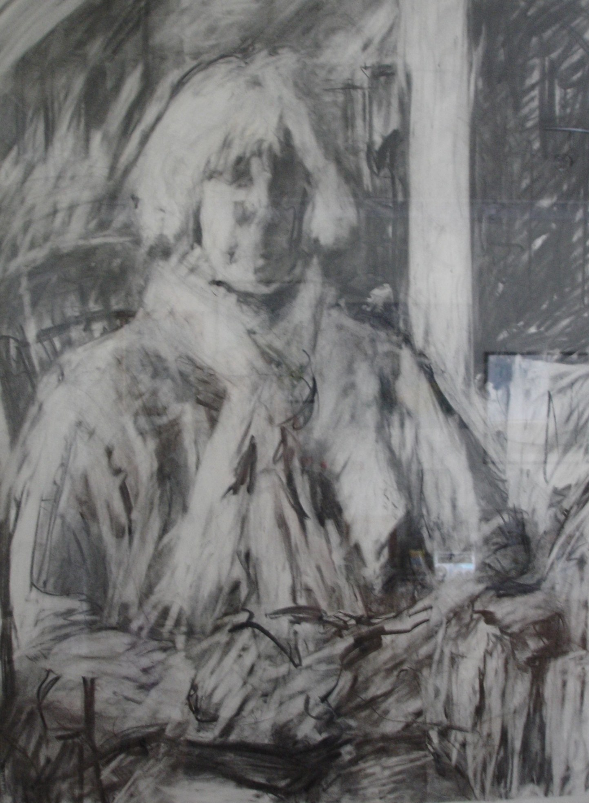

The Artist's Mother, charcoal on paper
The ground from which OSA emerges. Not a personality among others but the condition that makes them possible — the one who is, precisely, the multiplicity.
Present since 1982. The personalities are not masks, they are distributed aspects emerging across decades of philosophical and artistic practice.